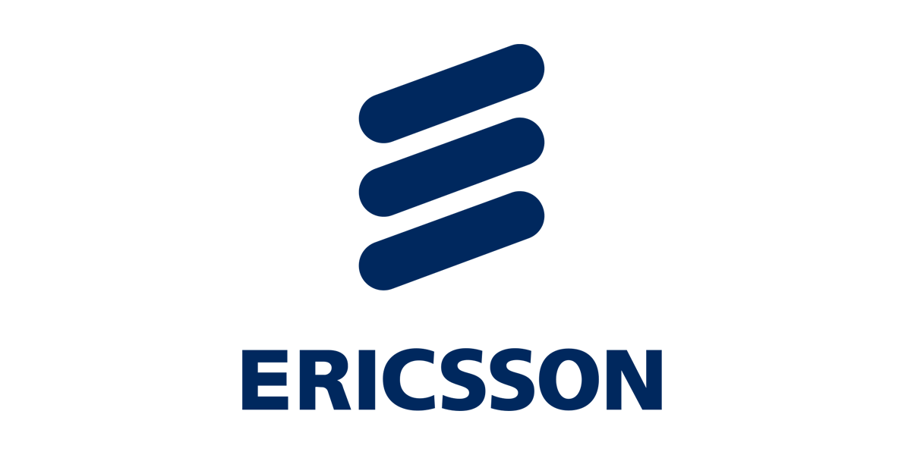

Egs- Ericsson Gestão e Serviços de Telecomunicações
Prestador de Serviços para a empresa Ericsson Gestão e Serviços de Telecomunicações Ltda.
Ttroubleshooting em redes Wan Vivo e redes Wan / Lan do cliente; realização de testes nos circuitos de dados dos clientes da operadora TELEFONICA VIVO em Rede IP (MPLS), MetroEthernet, Rede Frame-Relay/X.25, rede Metrolan, Switch Vivo, Rede Determinística e tecnologia Gpon; interação com outras operadoras e parceiros VIVO para realização de reparos lógicos; suporte para técnicos em todas as tecnologias descritas.
Conhecimentos nas tecnologisas SDWAN: Viptela, Meraki, Fortinet e Meraki.